旅行
北京行记
前言
旅行是给人一个打开心境的过程
旅游是给人一个打开心境的过程，即使是一个人旅游，你也能够在沿途上遇到有趣的陌生人，从而分享你在旅途中所有的感悟。
当我走到一个新的地方，不同的景色固然有着很强的吸引力，可长久居住在那个地方的人们，似乎对我构成了更强的兴趣。
我希望能够了解到他们的想法，了解一方水土养一方人家后，他们对周遭的不同看法是如何能够影响到自己的。
July 1
北京大学
上午前去北京大学报道，当人脸能够直接刷进闸机，让自己产生了片刻的错觉，我能够成为一个北大学生，只不过为期 2 个星期。
报道的老师们一个个相当和善，即使面对不知道是哪里来的我们，她们也根本没有拿出瞧不起人的态度。
报道完，还剩了一个小时多，于是我们便在有限的时间里逛起了校园。感觉北大不愧是政治相关的顶级学校了，校园里哪里都是红色。
当红色为主基调，那些偶尔才能看到的蓝色建筑，比如图书馆就变得更加气派和高雅了。
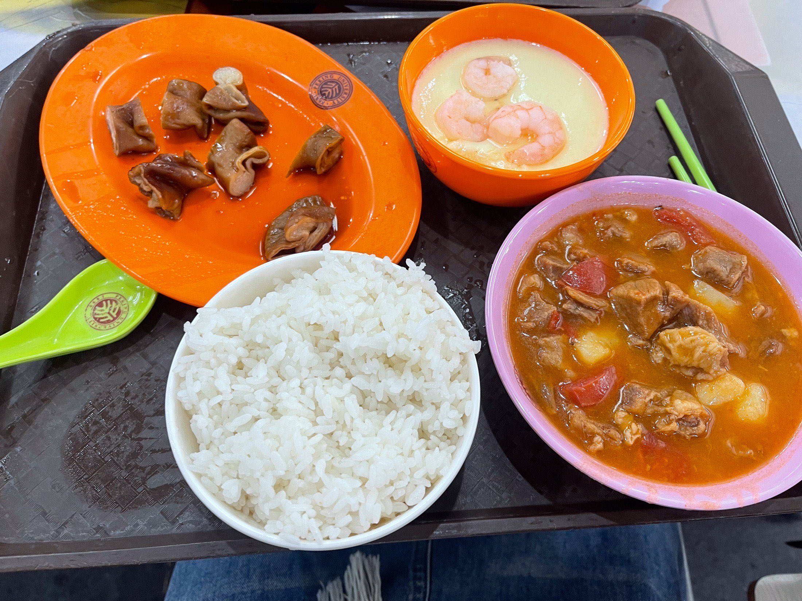
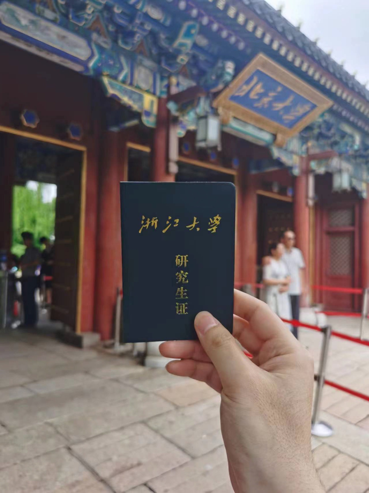
南锣鼓巷和天安门
吃完晚饭后，我们便前往了附近的商业街：南锣鼓巷。提前看了大众点评上的评论，有一句总结得很好，“不来要后悔，来了也要后悔的地方”。
果然商业街都是大差不差的样子，里面人山人海，游玩的兴致也因此不是很高。
我们走马观花般结束了这个商业街。离开之前，在路旁的自行车看到了一只猫，全身洁白的毛发配上黄色的墨镜，好帅，有点要变成猫先生的样子了。
到了天安门前外面的路口，突然出现了好多辆，是多到简直无法通行的程度。保安重复的都是一个命令，“不要停车，边走边拍。”
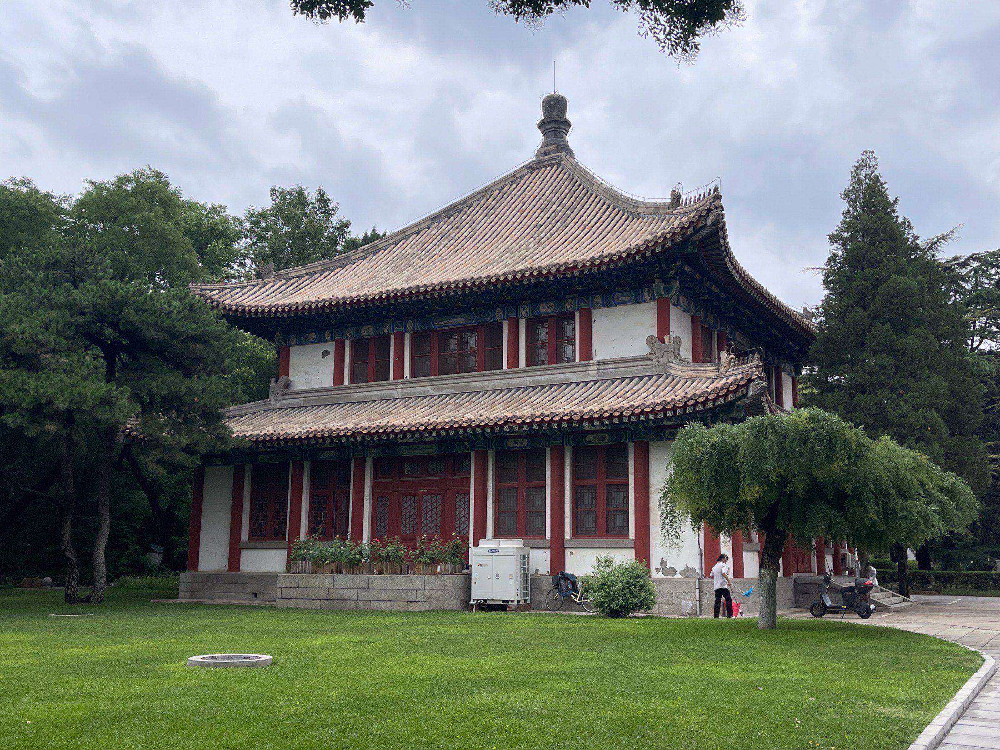
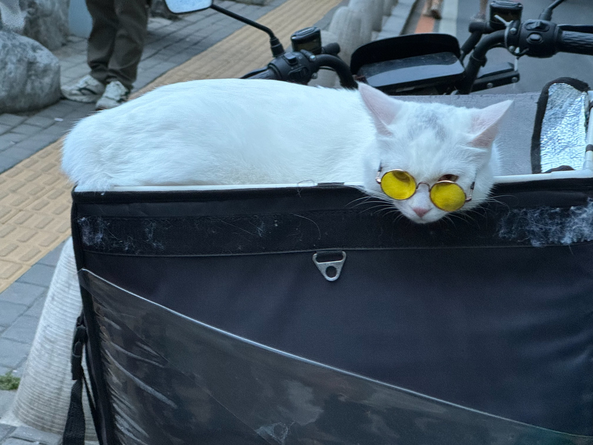
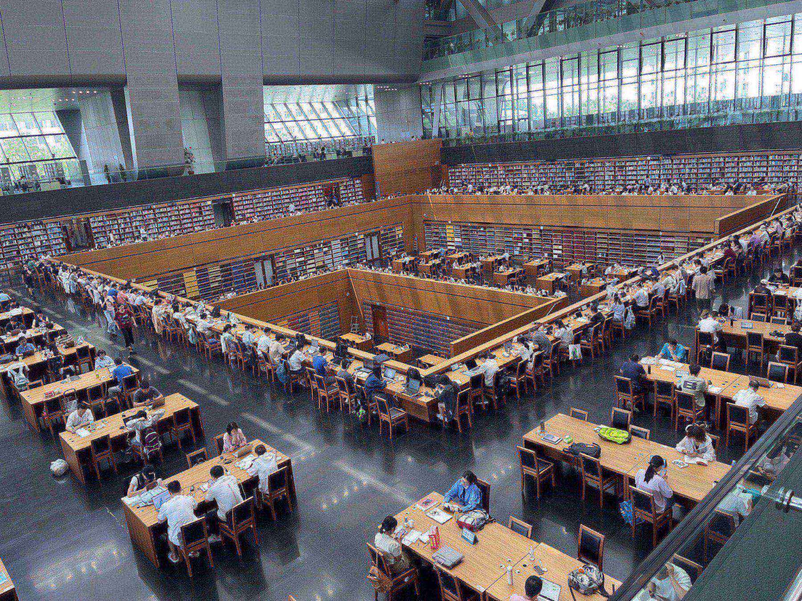
July 2-3
书店专辑
书店1：page one。咖啡店+书店的经营模式，位置只有买了饮品才可以坐下，逛了一圈，感觉是现代书店的样子。
书店2：万圣书园。位置居然在商场里面，仿佛外面是喧闹的世界，里面却是一个安静的角落。
尝试进北大图书馆
看来图书馆真的是一个学校的门面担当和身份认同的地方。暑期学校的学生，是没有资格进入这里的。可是，作为图书馆常客的自己，还是非常想观摩一下北大的图书馆内部，到底会是怎样的“富丽堂皇”。
我想，只剩最后一次机会了。我前去图书馆，再次面对那位小哥。我把一路上的来龙去脉一一说给了他听，希望他能够对我如此的辛苦和坚定感到一丝同情。可是，最后他还是说了不行，露出了一丝苦笑。
最终回合，以失败结束。
July 6
怒走颐和园
有了上次和同伴们一起逛圆明园、自己却根本没有体会到一点漫步的快乐的经历后，我这次就选择独自前往颐和园。
正如前文所说，颐和园就是一个大园子，中心是一片湖，四周依湖而建。
行走时，我改变了往常一贯的作风，我不再带着耳机，开着降噪，而是尽量感受着身旁吹来的热风，观察着路上行走的人们。
总结来看，颐和园并没有带给自己什么特别新奇的游玩体验。它就是一个大公园，适合黄昏的散步。
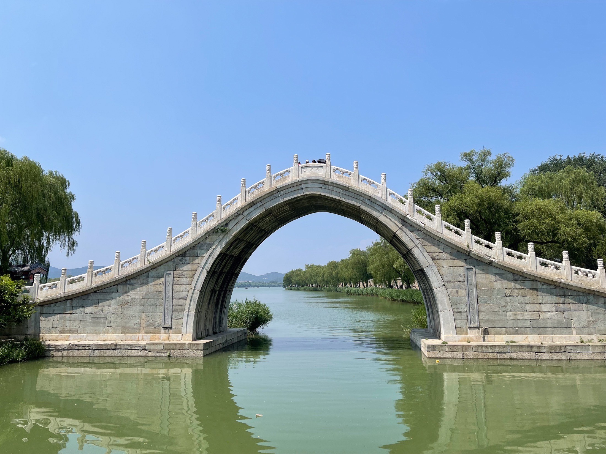
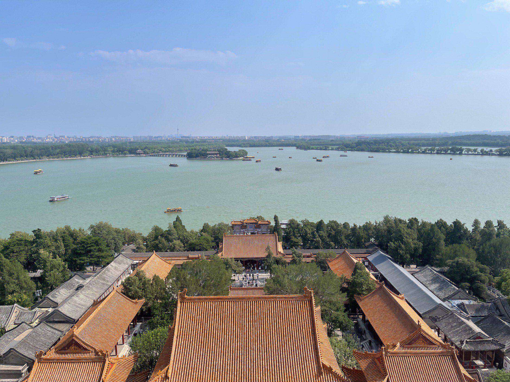
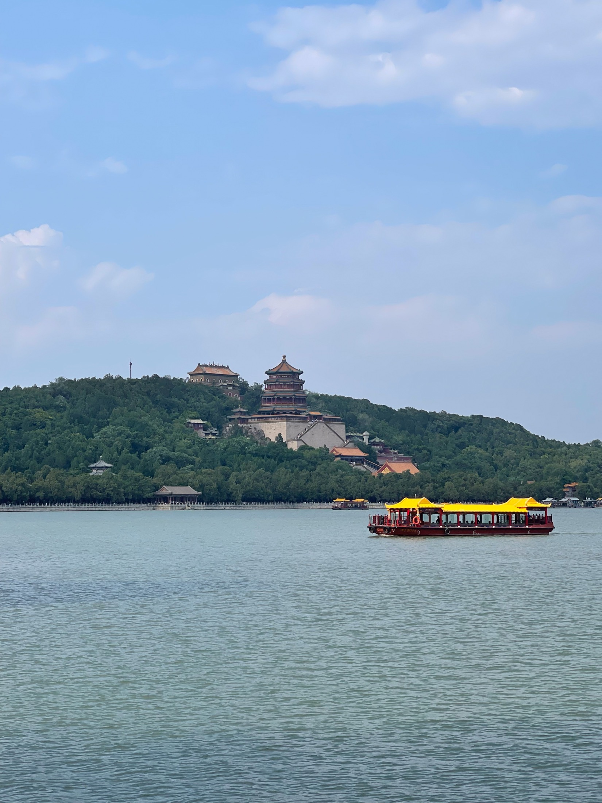
July 7
和呆傻一起怒爬长城
我们退了缆车的票，因为我看了看导航，发现爬上和爬下其实花不了多少时间，何况缆车还根本坐不上，还要额外多花100块大洋，长城票才40呢。
“不到长城非好汉” 我想，有多少人是因为这句话，才来到此地。
途中最困难的不在于路，而是在于周围的人。到了北五，缆车上的人们突然都加入了队伍，速度也不再可控，我们只能顺着人群，慢慢地往前挪动。
一路上，我们还是看风景为主，城墙外是漫山遍野的绿。
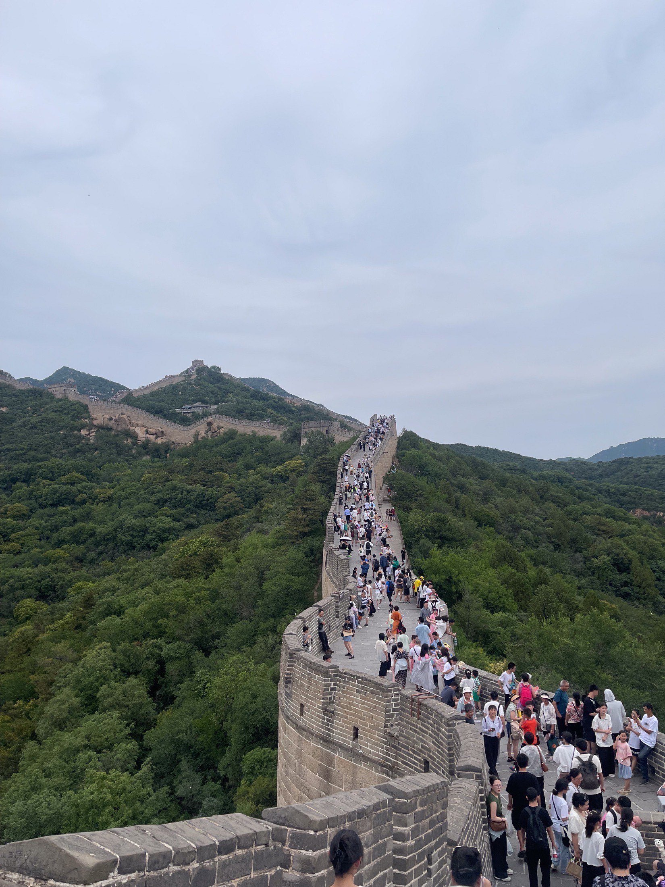
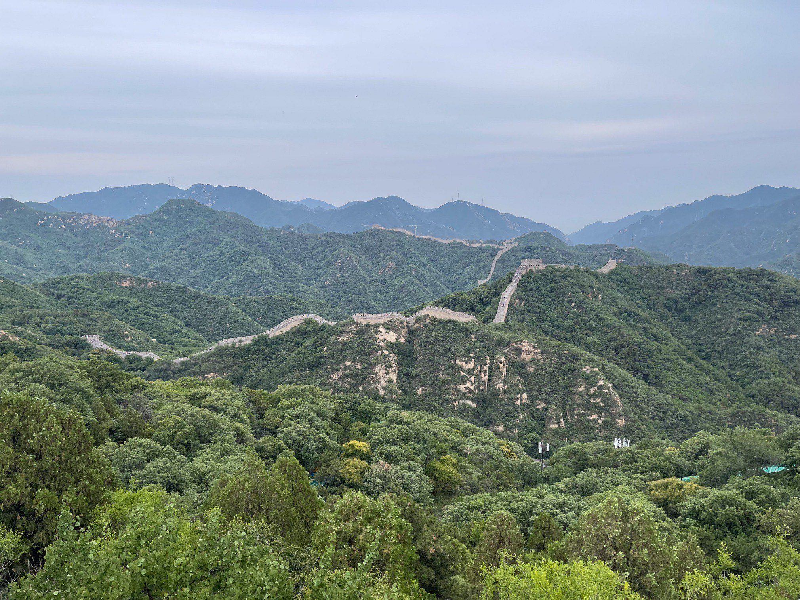
July 9
王府井商业街
傍晚到的商业街，此时街上的人并没有很多。
比较有趣的是站在街角，拿着画板和彩色颜料的画笔的一位人民画家，她对着钟楼的方向，在夜晚完全降临之前，捕捉黄昏的光芒洒在建筑上的瞬间。
她附近围了不少观看的群众，当然我也是其中之一，我对着她的画和实景照了张像，并没有打扰她，就转身离去了。
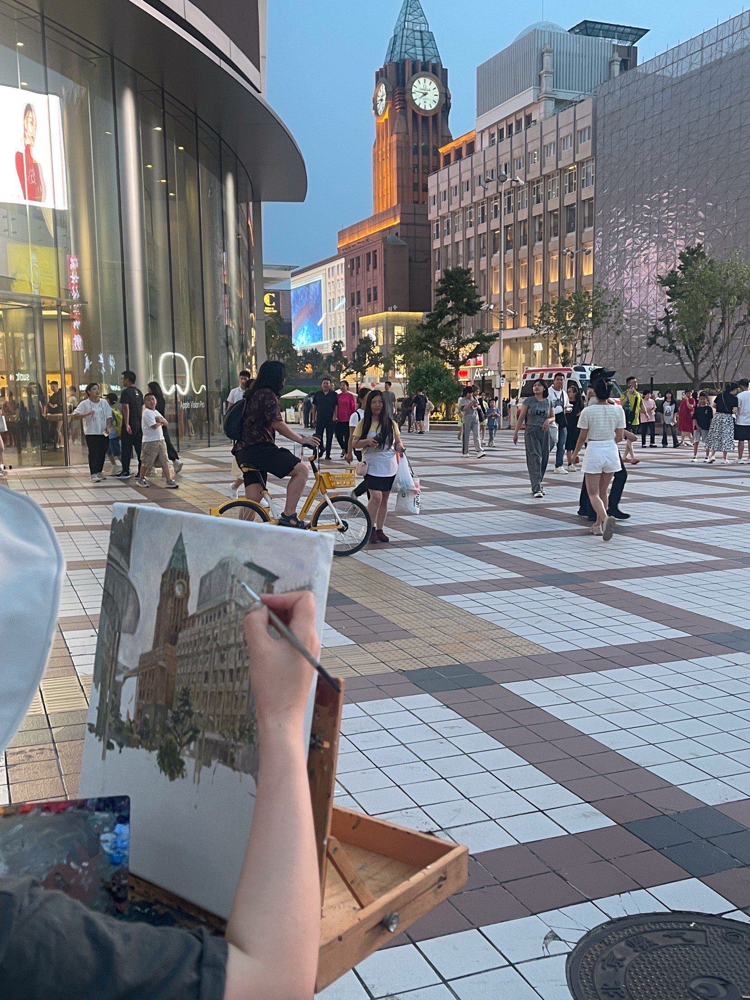
July 10
教堂
今天第一次去了教堂，是北京最大的天主教的教堂。
内部由许多柱子支撑着，上方天花板红白交错，前方有个讲坛，底下是座位。两侧的墙壁上有着壁画的窗户，光从外面打进来，透进来的光也就变成了彩虹的颜色。
天坛
逛完教堂，出来已经接近下午三点了。坐地铁到天坛，抵达时已将近四点。
虽然又是北京一个 5A 级的景区，但和北京其他园林文化丝毫没有区别：又是一个绿树成荫的大公园。
走在这样的道路上，看着两边来来往往的游客，全权当作下午、接近傍晚的散步了。
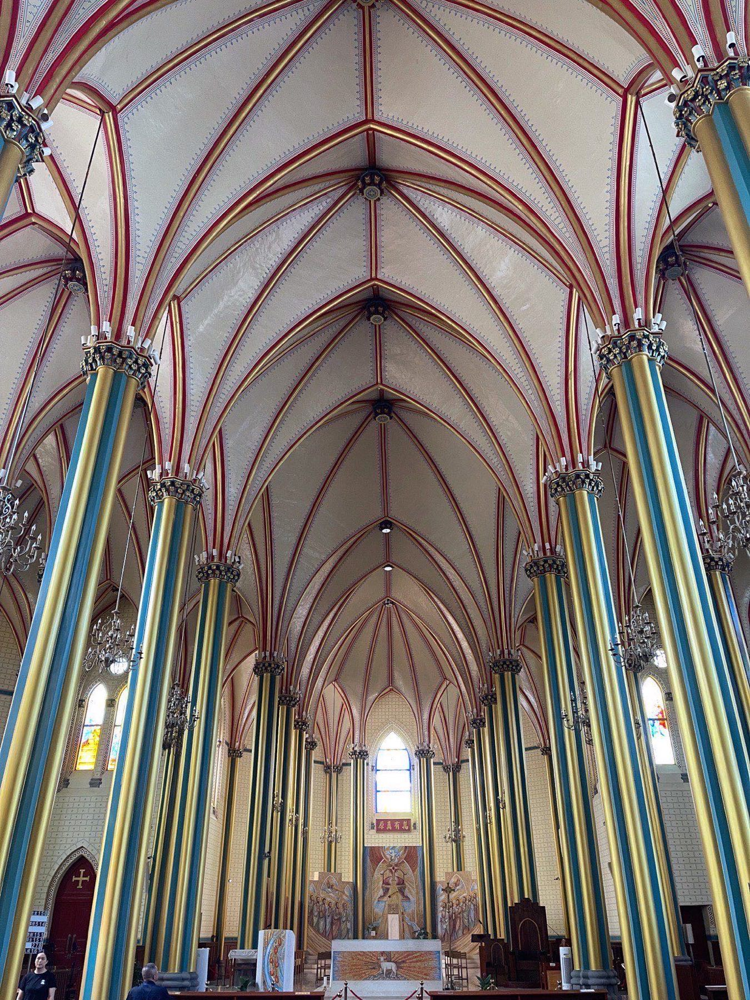
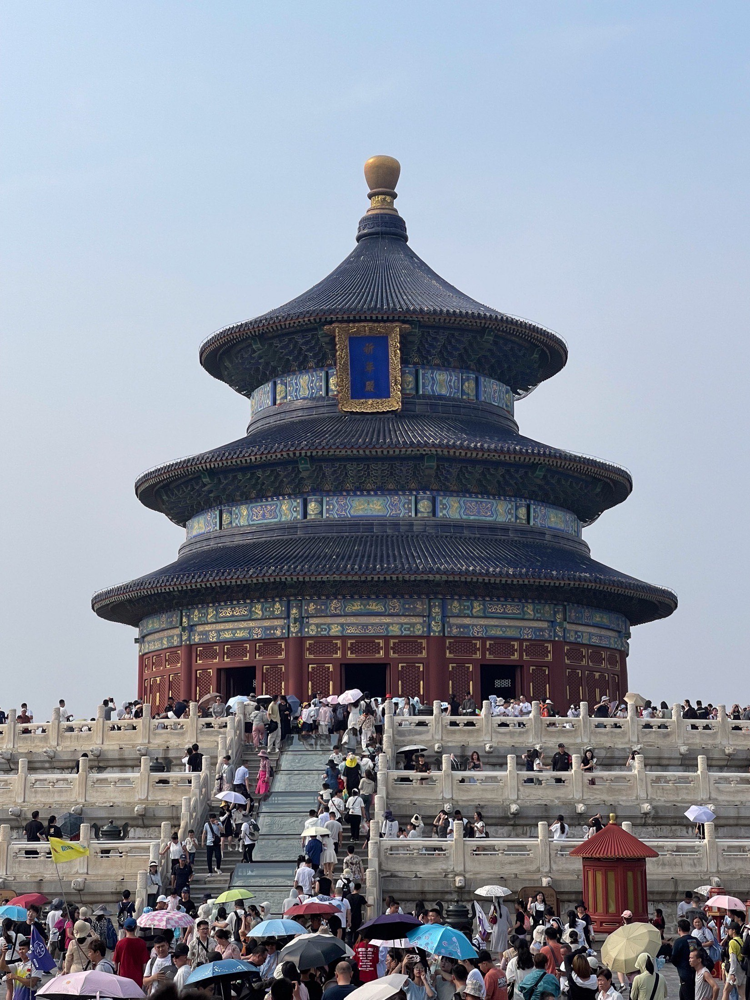
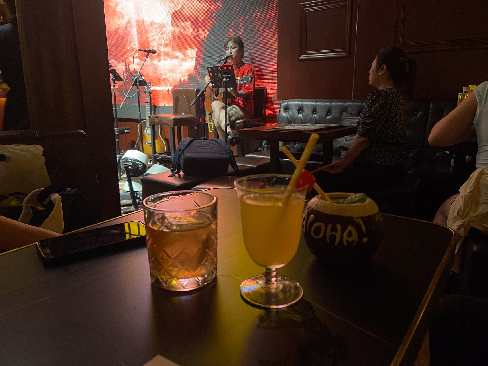
July 11
798艺术区
北京之旅只有最后两天了，我该去何地，才能获得最新奇的体验呢。最后我去了 798 艺术区。
问了问门票的价格，需要55块钱。正当我想要离去时，我转念一想，不能对不起这55的门票，我最后再多看几分钟吧。
通过他们的对话，我才得知，眼前的中年男子，是附近教电影史的老师。
我觉得我刹时发现了旅行的意义，见到了陌生的人们，并和他们产生关联，从而产生意想不到的火花。
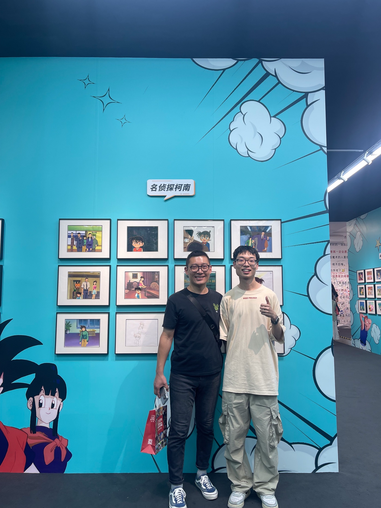
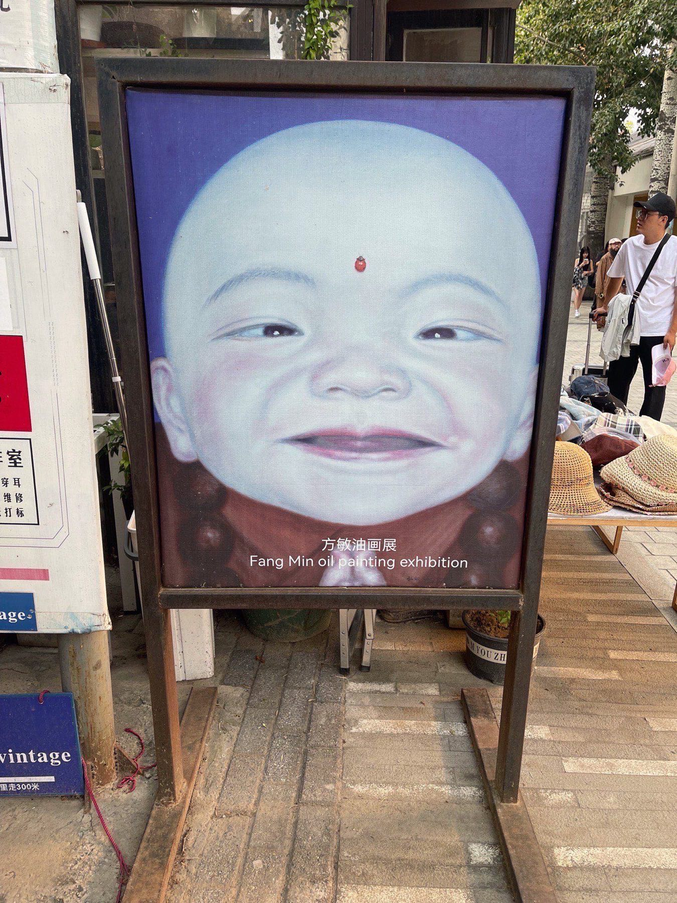